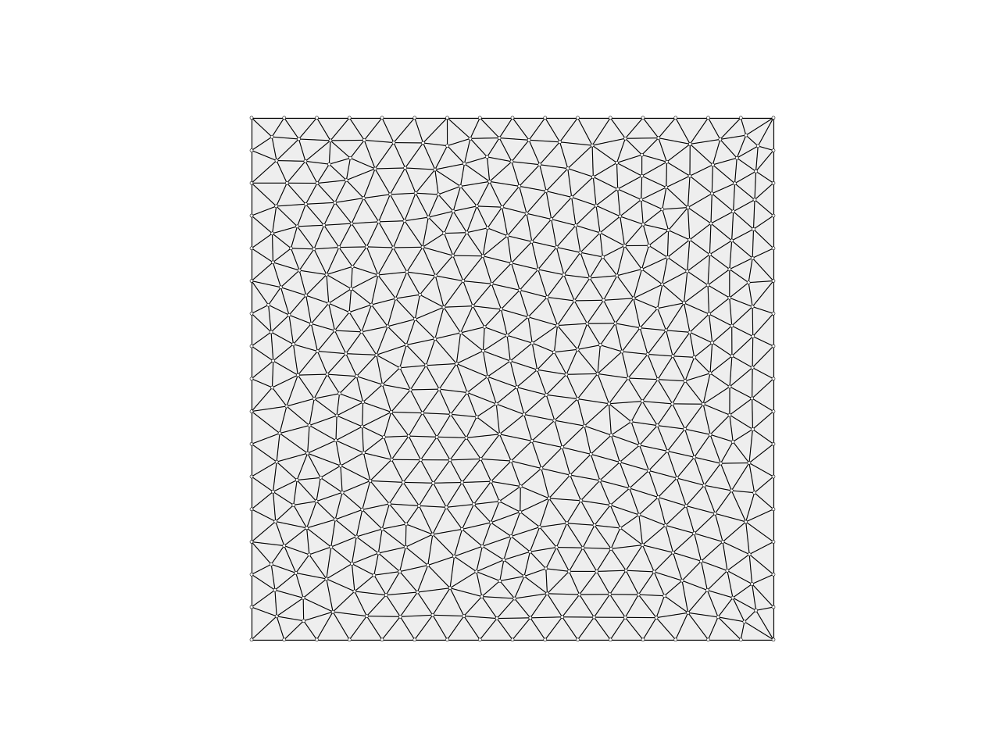

trimesh_remesh
-
compas.topology.trimesh_remesh(mesh, target, kmax=100, tol=0.1, divergence=0.01, verbose=False, allow_boundary_split=False, allow_boundary_swap=False, allow_boundary_collapse=False, smooth=True, fixed=None, callback=None, callback_args=None)[source] Remesh until all edges have a specified target length.
- Parameters
mesh (Mesh) – A triangle mesh.
target (float) – The target length for the mesh edges.
kmax (int, optional [100]) – The number of iterations.
tol (float, optional [0.1]) – Length deviation tolerance.
divergence (float, optional [0.01]) – ??
verbose (bool, optional [False]) – Print feedback messages.
allow_boundary_split (bool, optional [False]) – Allow boundary edges to be split.
allow_boundary_swap (bool, optional [False]) – Allow boundary edges or edges connected to the boundary to be swapped.
allow_boundary_collapse (bool, optional [False]) – Allow boundary edges or edges connected to the boundary to be collapsed.
smooth (bool, optional [True]) – Apply smoothing at every iteration.
fixed (list, optional [None]) – A list of vertices that have to stay fixed.
callback (callable, optional [None]) – A user-defined function that is called after every iteration.
callback_args (list, optional [None]) – A list of additional parameters to be passed to the callback function.
- Returns
None
Notes
This algorithm not only changes the geometry of the mesh, but also its topology as needed to achieve the specified target lengths. Topological changes are made such that vertex valencies are well-balanced and close to six. This involves three operations:
split edges that are longer than a maximum length,
collapse edges that are shorter than a minimum length,
swap edges if this improves the valency error.
The minimum and maximum lengths are calculated based on a desired target length.
For more info, see 1.
References
- 1
Botsch, M. & Kobbelt, L., 2004. A remeshing approach to multiresolution modeling. Proceedings of the 2004 Eurographics/ACM SIGGRAPH symposium on Geometry processing - SGP ‘04, p.185. Available at: http://portal.acm.org/citation.cfm?doid=1057432.1057457.
Warning
In the current implementation, allowing boundary collapses may lead to unexpected results since it will not preserve the gometry of the original boundary.
Examples
from compas.datastructures import Mesh from compas.plotters import MeshPlotter from compas.topology import trimesh_remesh vertices = [ (0.0, 0.0, 0.0), (10.0, 0.0, 0.0), (10.0, 10.0, 0.0), (0.0, 10.0, 0.0), (5.0, 5.0, 0.0) ] faces = [ (0, 1, 4), (1, 2, 4), (2, 3, 4), (3, 0, 4) ] mesh = Mesh.from_vertices_and_faces(vertices, faces) trimesh_remesh( mesh, target=0.5, tol=0.05, kmax=300, allow_boundary_split=True, allow_boundary_swap=True, verbose=False ) plotter = MeshPlotter(mesh) plotter.draw_vertices(radius=0.03) plotter.draw_faces() plotter.draw_edges() plotter.show()
See also